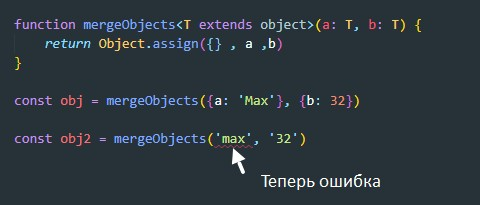
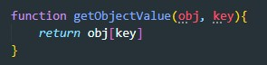
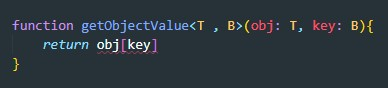
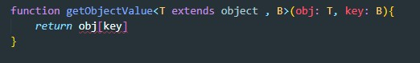
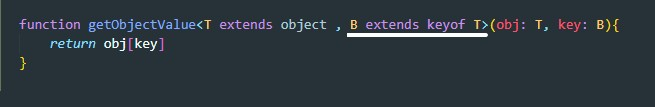

Generics — это возможность создавать компоненты, работающие не только с одним, а с несколькими типами данных
Допустим у нас есть функция которая принимает массив и возвращает его в перевернутом виде

Но как нам указать какой тип данных мы ей передали, ведь массив может иметь числа, может строки, а может и то и другое одновременно. В этом нам и помогу дженерики. Вот как будет выглядеть наша функция с Generics

По сути Generics это указатель типа в угловых скобках. Вот пример указания типа данных массива

Допустим у нас есть функция, которая получает два объекта и возвращает объект состоящий из этих двух.

Как нам с помощью Generic указать тип принимаемых аргументов:

Но теперь у нас возникает проблема, если мы допустим передадим функции не объекты а строки то TS никак не среагирует на эту ошибку, поэтому нам надо указать что входные аргументы должны наследоваться от объекта

Вот как это должно выглядеть
У нас есть фунция которая принимает в себя объект и ключ и возвращает значение ключа у объекта
Сначала перепишем нашу функцию с использованием дженериков
Теперь укажем что первый универсальный тип Т он у нас наследуется от object (т.е. тип первого аргумента должен быть объектом)
Далее нам надо указать что второй аргумент он у нас должен являться ключем от типа котороый мы передали первым аргументом, т.е. объекта
